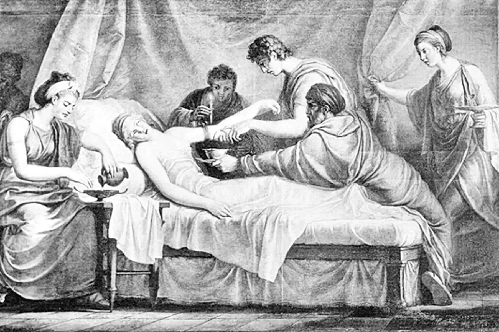

健康與文化介紹
我是亞洲大學健康產業管理學系的一年級學生，對古代醫學與文化健康觀深感興趣。
我喜歡研究古代文明如何看待「健康」與「養生」，並思考如何將古人的智慧結合現代健康管理理念，創造出更全面的健康產業模式。
學歷
- 亞洲大學 — 健康產業管理學系（2025 - 現在）
語言能力
- 越南語（母語）
- 中文
- English
興趣與研究方向
- 古代醫學與健康觀研究
- 文化養生與健康管理
- 健康與社會發展
- 文化旅遊與健康推廣
技能
- 資料整理與簡報設計
- HTML / CSS 網頁設計基礎
- 團隊合作與溝通能力
學習目標
希望能從古代醫學與文化的視角理解現代健康產業，並將歷史智慧融入現代健康教育與產業創新中。